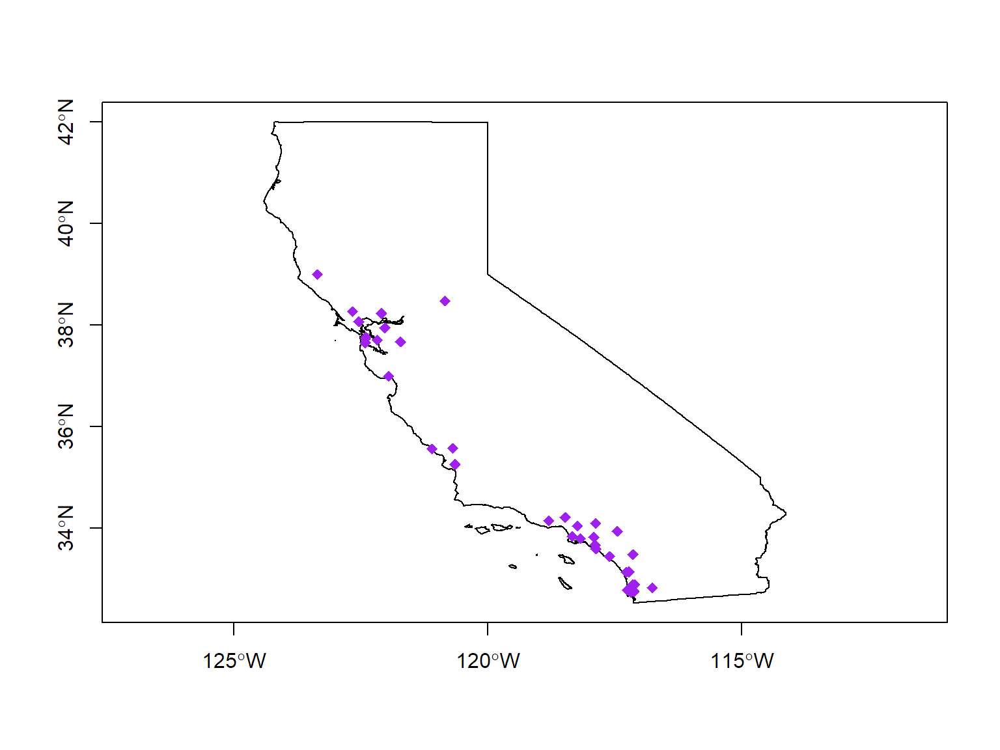

Character Data
Combine vs. Concatenation
Combine means building a vector. For character (string) vectors, we generally use the c() function.
x <- c("I", "have", "a", "dream")
x
## [1] "I" "have" "a" "dream"
Concatenate means string together. In spreadsheets and most programming languages, you can concatenate strings with the & or + operators (e.g., "I " & "have " & "a " & "dream" in most languages returns 'I have a dream').
R is different. To concatentate character objects in R, you have to use paste().
paste("I", "have", "a", "dream")
## [1] "I have a dream"
You can customize the paste() function by specifying the separator character.
paste("I", "have", "a", "dream", sep="-")
## [1] "I-have-a-dream"
Note in the paste() expression above the strings are passed as separate arguments, not elements of a vector. See what happens when you pass a character vector.
paste(c("I", "have", "a", "dream"))
## [1] "I" "have" "a" "dream"
If you want to concatenate the elements of a character vector, you can use the collapse argument.
paste(c("I", "have", "a", "dream"), collapse="--")
## [1] "I--have--a--dream"
paste() is a vectorized function, meaning if you pass it two or more character vectors, it will concantenate the corresponding elements.
x <- c("hot", "cold", "stale")
y <- c("soup", "sandwich", "donut")
paste(x, y)
## [1] "hot soup" "cold sandwich" "stale donut"
Example 2: Geocode California Breweries
First we import the ca_breweries.csv file. For now we'll just work with the first 40 records.
csv_fn <- "../exercises/data/ca_breweries.csv"
file.exists(csv_fn)
## [1] TRUE
ca_brew_df <- read.csv(csv_fn, stringsAsFactors = FALSE)
ca_brew_df <- ca_brew_df[1:40,]
head(ca_brew_df)
## Name Address
## 1 10 Mile Brewing Company 1136 E Willow St
## 2 101 North Brewing 1304 Scott St Suite D
## 3 14 Cannons 31125 Via Colinas Suite 907
## 4 21st Amendment Brewery - San Leandro 2010 Williams St
## 5 2Kids Brewing Company 8680 Miralani Drive
## 6 32 North Brewing Company 8655 Production Ave Suite A
## City State Phone Type
## 1 Signal Hill CA (562) 612-1255 Brewery
## 2 Petaluma CA (707) 778-8384 Brewery
## 3 Westlake Village CA (818) 652-6971 Brewery
## 4 San Leandro CA Brewery
## 5 San Diego CA (858) 480-5437 Brewery
## 6 Sand Diego CA 619-363-2622 Brewery
It looks like the addresses are split across the 'Address', 'City', and 'State' columns. Let's combine those and try to get the coordinates.
ca_brew_address <- paste(ca_brew_df$Address, ca_brew_df$City, ca_brew_df$State, sep=", ")
#head(ca_brew_address)
ca_brew_address
## [1] "1136 E Willow St, Signal Hill, CA"
## [2] "1304 Scott St Suite D, Petaluma, CA"
## [3] "31125 Via Colinas Suite 907, Westlake Village, CA"
## [4] "2010 Williams St, San Leandro, CA"
## [5] "8680 Miralani Drive, San Diego, CA"
## [6] "8655 Production Ave Suite A, Sand Diego, CA"
## [7] "1795 Hancock Street, San Diego, CA"
## [8] "821 Cornwall St, Cambria, CA"
## [9] "2878 Columbia Street, Torrance, CA"
## [10] "435 Fernleaf, Corona Del Mar, CA"
## [11] "1795 Hancock St., Suite P1, San Diego, CA"
## [12] "28822 Old Town Front St., Temecula, CA"
## [13] "975 Detroit Ave, Concord, CA"
## [14] "9368 Cabot Drive, San Diego, CA"
## [15] "692 Arrow Grand Cir, Covina, CA"
## [16] "2351 Alpine Blvd., Alpine, CA"
## [17] "2402 Research Drive, Livermore, CA"
## [18] "9659 Main St, Plymouth, CA"
## [19] "4150 Mission Blvd #208, San Diego, CA"
## [20] "336 South Anaheim Boulevard , Anaheim, CA"
## [21] "1705 Mariposa St., San Francisco, CA"
## [22] "17700 Highway 253, Boonville, CA"
## [23] "216 S Alameda St, Los Angeles, CA"
## [24] "3101 Busch Dr., Fairfield, CA"
## [25] "15800 Roscoe Blvd, Van Nuys, CA"
## [26] "5621 Palmer Way, Carlsbad, CA"
## [27] "7123 Arlington Ave., Suite - A, Riverside, CA"
## [28] "415 Grande Ave, South San Francisco, CA"
## [29] "919 Calle Amanecer Suite A, San Clemente, CA"
## [30] "3416 Adams Ave., San Diego, CA"
## [31] "2330 La Mirada Dr. Suite 300, Vista, CA"
## [32] "401-B Bel Marin Keys Blvd, Novato, CA"
## [33] "5401 Linda Vista Road, Suite 406, San Diego, CA"
## [34] "10051 Old Grove Road Suite B, San Diego, CA"
## [35] "950 Orcutt Rd, San Luis Obispo, CA"
## [36] "1525 Cortland Ave, San Francisco, CA"
## [37] "3535 N. Main St., Soquel, CA"
## [38] "2957 Randolph Ave, Unit B, Costa Mesa, CA"
## [39] "2575 Pioneer Ave #104, Vista, CA"
## [40] "3055 Limestone Way, Paso Robles, CA"
Now we can run the geocode service.
Tip: The free Google geocoding service has a limit of 2500 addresses per day per IP address. There may also be a limit on the number of requests per second, per IP address. If you get error messages that say Geocode Failed with Status OVER_QUERY_LIMIT, but you haven't reached your 2500 daily limit, the issue may be queries that are too rapid.
Some of these bottlenecks can be overcome by 1) getting a Google Maps API Key and 2) entering your Google Maps API key when you submit your geocode requests. Getting a Google Maps API key is easy. To use a Google Maps API key while geocoding, you must be using ggmap v2.7 or later. You can see which verion you have by running packageVersion(). ggmap v2.7 is not on CRAN yet, so you have to use devtools::install_github("dkahle/ggmap"). Once you have version 2.7, enter your Google Maps API key with the register_google() function, before running geocode().
## Load my Google Maps API key
load("~/google_api_key.RData")
## Enter API key
register_google(key=my_google_api_key)
ca_brew_geocode_df <- ggmap::geocode(ca_brew_address, source = "google", output = "latlona")
Add the geocoding results to the data frame.
ca_brew_df <- cbind(ca_brew_df, ca_brew_geocode_df)
#head(ca_brew_df)
ca_brew_df
## Name
## 1 10 Mile Brewing Company
## 2 101 North Brewing
## 3 14 Cannons
## 4 21st Amendment Brewery - San Leandro
## 5 2Kids Brewing Company
## 6 32 North Brewing Company
## 7 5 Points Brewing Company
## 8 927 Beer Company
## 9 Absolution Brewing Company
## 10 Academy of Fine Beers
## 11 Acoustic Ales Brewing Experiment
## 12 Aftershock Brewery
## 13 Ale Industries
## 14 AleSmith Brewing Company
## 15 Alosta Brewing Company
## 16 Alpine Beer Company
## 17 Altamont Beer Works
## 18 Amador Brewing Company
## 19 Amplified Ale Works
## 20 Anaheim Brewery
## 21 Anchor Brewing Co.
## 22 Anderson Valley Brewing Company
## 23 Angel City Brewery
## 24 Anheuser-Busch - Fairfield
## 25 Anheuser-Busch Inc - Van Nuys
## 26 Arcana Brewing
## 27 Area 51 Craft Brewery
## 28 Armstrong Brewing
## 29 Artifex Brewing Company
## 30 Automatic Brewing Company
## 31 Aztec Brewery
## 32 Baeltane Brewing
## 33 Ballast Point Brewing Co.
## 34 Ballast Point Brewing Co. - Main Brewery
## 35 Bang the Drum Brewery
## 36 Barebottle Brewing Company
## 37 Bargetto Winery (Chaucer's Wines)
## 38 Barley Forge Brewing Company
## 39 Barrel Harbor Brewing
## 40 BarrelHouse Brewing Company
## Address City State
## 1 1136 E Willow St Signal Hill CA
## 2 1304 Scott St Suite D Petaluma CA
## 3 31125 Via Colinas Suite 907 Westlake Village CA
## 4 2010 Williams St San Leandro CA
## 5 8680 Miralani Drive San Diego CA
## 6 8655 Production Ave Suite A Sand Diego CA
## 7 1795 Hancock Street San Diego CA
## 8 821 Cornwall St Cambria CA
## 9 2878 Columbia Street Torrance CA
## 10 435 Fernleaf Corona Del Mar CA
## 11 1795 Hancock St., Suite P1 San Diego CA
## 12 28822 Old Town Front St. Temecula CA
## 13 975 Detroit Ave Concord CA
## 14 9368 Cabot Drive San Diego CA
## 15 692 Arrow Grand Cir Covina CA
## 16 2351 Alpine Blvd. Alpine CA
## 17 2402 Research Drive Livermore CA
## 18 9659 Main St Plymouth CA
## 19 4150 Mission Blvd #208 San Diego CA
## 20 336 South Anaheim Boulevard Anaheim CA
## 21 1705 Mariposa St. San Francisco CA
## 22 17700 Highway 253 Boonville CA
## 23 216 S Alameda St Los Angeles CA
## 24 3101 Busch Dr. Fairfield CA
## 25 15800 Roscoe Blvd Van Nuys CA
## 26 5621 Palmer Way Carlsbad CA
## 27 7123 Arlington Ave., Suite - A Riverside CA
## 28 415 Grande Ave South San Francisco CA
## 29 919 Calle Amanecer Suite A San Clemente CA
## 30 3416 Adams Ave. San Diego CA
## 31 2330 La Mirada Dr. Suite 300 Vista CA
## 32 401-B Bel Marin Keys Blvd Novato CA
## 33 5401 Linda Vista Road, Suite 406 San Diego CA
## 34 10051 Old Grove Road Suite B San Diego CA
## 35 950 Orcutt Rd San Luis Obispo CA
## 36 1525 Cortland Ave San Francisco CA
## 37 3535 N. Main St. Soquel CA
## 38 2957 Randolph Ave, Unit B Costa Mesa CA
## 39 2575 Pioneer Ave #104 Vista CA
## 40 3055 Limestone Way Paso Robles CA
## Phone Type lon lat
## 1 (562) 612-1255 Brewery -118.1778 33.80398
## 2 (707) 778-8384 Brewery -122.6652 38.27000
## 3 (818) 652-6971 Brewery -118.8019 34.15511
## 4 Brewery -122.1766 37.71124
## 5 (858) 480-5437 Brewery -117.1373 32.89665
## 6 619-363-2622 Brewery -117.1648 32.88268
## 7 (619) 550-BREW Brewery -117.1846 32.74227
## 8 (805) 203-5265 Brewery -121.0986 35.56669
## 9 Brewery -118.3379 33.84314
## 10 (949) 862-5808 Brewery -117.8749 33.60037
## 11 (619) 299-2537 Brewery -117.1846 32.74227
## 12 (951) 972-2256 Brewery -117.1448 33.48849
## 13 (925) 470-5280 Brewery -122.0281 37.95144
## 14 (858) 549-9888 Brewery -117.1447 32.89238
## 15 (626) 470-7897 Brewery -117.8791 34.10453
## 16 (619) 445-2337 Brewery -116.7627 32.83517
## 17 (925) 443-2337 Brewery -121.7200 37.67585
## 18 209-507-1900 Brewery -120.8434 38.48235
## 19 (858) 270-5222 Brewery -117.2543 32.79177
## 20 (714) 780-1888 Brewery -117.9125 33.83274
## 21 (415) 863-8350 Brewery -122.4008 37.76330
## 22 (800) 207-BEER Brewery -123.3556 39.00051
## 23 (213) 622-1261 Brewery -118.2381 34.04678
## 24 (707) 429-7653 Brewery -122.0937 38.23643
## 25 (818) 989-5300 Brewery -118.4768 34.22096
## 26 (909) 529-2337 Brewery -117.2739 33.14021
## 27 (909) 936-5010 Brewery -117.4499 33.94658
## 28 650-989-8447 Brewery -122.4131 37.65559
## 29 949-429-7805 Brewery -117.6059 33.44893
## 30 (619) 255-2491 Brewery -117.1203 32.76350
## 31 (800) 706-6324 Brewery -117.2300 33.14965
## 32 (415) 883-2040 Brewery -122.5383 38.07491
## 33 (619) 298-2337 Brewery -117.1953 32.76672
## 34 (619) 298-2337 Brewery -117.1109 32.89853
## 35 805-242-8372 Brewery -120.6458 35.26148
## 36 415-926-8617 Brewery -122.4091 37.74009
## 37 (800) 211-6630 Brewery -121.9545 36.99536
## 38 (714) 641-2084 Brewery -117.8882 33.67870
## 39 760-734-3949 Brewery -117.2216 33.14887
## 40 805 296-1128 Brewery -120.6911 35.57597
## address
## 1 1136 e willow st, signal hill, ca 90755, usa
## 2 1304 scott st d, petaluma, ca 94954, usa
## 3 31125 via colinas #907, westlake village, ca 91362, usa
## 4 2010 williams st, san leandro, ca 94577, usa
## 5 8680 miralani dr, san diego, ca 92126, usa
## 6 8655 production ave a, san diego, ca 92121, usa
## 7 1795 hancock st, san diego, ca 92110, usa
## 8 821 cornwall st, cambria, ca 93428, usa
## 9 2878 columbia st, torrance, ca 90503, usa
## 10 435 fernleaf ave, corona del mar, ca 92625, usa
## 11 1795 hancock st, san diego, ca 92110, usa
## 12 28822 old town front st, temecula, ca 92590, usa
## 13 975 detroit ave, concord, ca 94518, usa
## 14 9368 cabot dr, san diego, ca 92126, usa
## 15 692 arrow grand cir, covina, ca 91722, usa
## 16 2351 alpine blvd, alpine, ca 91901, usa
## 17 2402 research dr, livermore, ca 94550, usa
## 18 9659 main st, plymouth, ca 95669, usa
## 19 4150 mission blvd #208, san diego, ca 92109, usa
## 20 336 s anaheim blvd, anaheim, ca 92805, usa
## 21 1705 mariposa st, san francisco, ca 94107, usa
## 22 17700 ca-253, yorkville, ca 95494, usa
## 23 216 s alameda st, los angeles, ca 90012, usa
## 24 3101 busch dr, fairfield, ca 94534, usa
## 25 15800 roscoe blvd, van nuys, ca 91406, usa
## 26 5621 palmer way, carlsbad, ca 92010, usa
## 27 7123 arlington ave a, riverside, ca 92503, usa
## 28 415 grand ave, south san francisco, ca 94080, usa
## 29 919 calle amanecer a, san clemente, ca 92673, usa
## 30 3416 adams ave, san diego, ca 92116, usa
## 31 2330 la mirada dr #300, vista, ca 92081, usa
## 32 401 bel marin keys blvd, novato, ca 94949, usa
## 33 5401 linda vista rd #406, san diego, ca 92110, usa
## 34 10051 old grove rd b, san diego, ca 92131, usa
## 35 950 orcutt rd, san luis obispo, ca 93401, usa
## 36 1525 cortland ave, san francisco, ca 94110, usa
## 37 3535 n main st, soquel, ca 95073, usa
## 38 2957 randolph ave b, costa mesa, ca 92626, usa
## 39 2575 pioneer ave #104, vista, ca 92081, usa
## 40 3055 limestone way, paso robles, ca 93446, usa
If there are any addresses that did not yield a match, we can investigate them using an attribute filter.
## [1] "Name" "Address" "City" "State" "Phone" "Type" "lon"
## [8] "lat" "address"
ca_brew_df[is.na(ca_brew_df$lon),]
## [1] Name Address City State Phone Type lon lat address
## <0 rows> (or 0-length row.names)
To plot the ones that geocoded successfully.
library(sp); library(raster)
ca_ll <- raster::getData("GADM", country="USA", level=1, download = TRUE)
ca_ll <- ca_ll[ca_ll@data$NAME_1=="California",]
ca_brew_sp <- sp::SpatialPoints(ca_brew_df[!is.na(ca_brew_df$lon),c("lon","lat")], proj4string = CRS("+init=epsg:4326"))
plot(ca_ll, axes=T, asp=1)
plot(ca_brew_sp, pch=18, col="purple", cex=1.2, add=TRUE)
